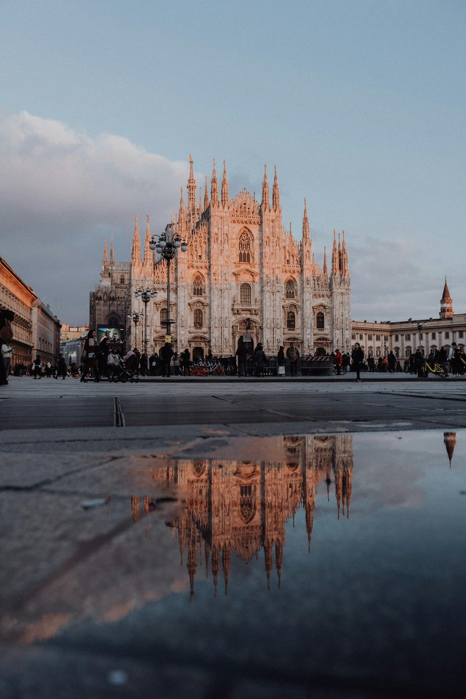

From the cathedral that took 579 years to build to a medieval square most visitors never find. No app. No group. No booking. First 3 stops free.
From the cathedral built over 579 years to the square that was the city's heart before the cathedral existed. Ten stops. Two thousand years of history. One extremely large hand.
Check out our other
European city tours
Leave a quick review. It helps other travellers find us and means a lot.
♥ Thank you so much. We'll read it and add it to the site shortly.
You have seen what this tour is like. The next 7 stops go further. €4.99, yours to keep forever.
Unlock Full Tour - €4.99Payments powered by Lemon Squeezy & Stripe